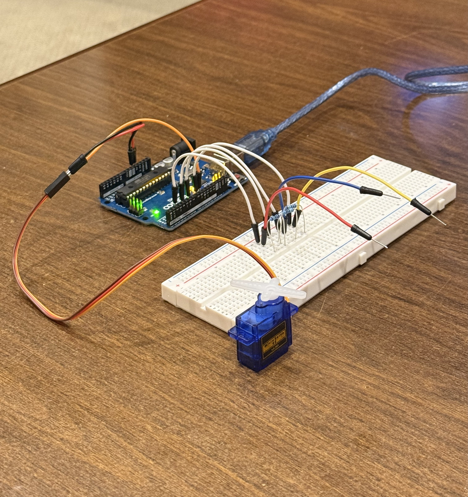

My Schematic
Image of my schematic with labeled components, including pins (send and receive), resistors, capacitive sensor wires, servo, power source, and ground.Resistance Values
I used 1M ohm resistors for the capacitive touch sensors because they provide low sensitivity, but fast response readings. It works well for my circuit's operation since I want the servo to move quickly when a capacitive touch is detected, without being too sensitive to false touches.My Circuit
 Image of my physical circuit, "Libraries", with all components connected.My Firmware
#include
#include
/*
* CapitiveSense Library Demo Sketch
* Paul Badger 2008
* Uses a high value resistor e.g. 10M between send pin and receive pin
* Resistor effects sensitivity, experiment with values, 50K - 50M. Larger resistor values yield larger sensor values.
* Receive pin is the sensor pin - try different amounts of foil/metal on this pin
*/
/* Sweep
by BARRAGAN
This example code is in the public domain.
modified 8 Nov 2013
by Scott Fitzgerald
https://www.arduino.cc/en/Tutorial/LibraryExamples/Sweep
*/
CapacitiveSensor cs_4_2 = CapacitiveSensor(4,2); // 1M resistor between pins 4 & 2, pin 2 is sensor pin, add a wire and or foil
CapacitiveSensor cs_4_6 = CapacitiveSensor(4,6); // 1M resistor between pins 4 & 6, pin 6 is sensor pin, add a wire and or foil
CapacitiveSensor cs_4_8 = CapacitiveSensor(4,8); // 1M resistor between pins 4 & 8, pin 8 is sensor pin, add a wire and or foil
Servo myservo; // create Servo object to control a servo
int pos = 90; // variable to store current servo position
long threshold = 60; // threshhold value: minimum capacitive reading that counts as a touch
void setup() {
// turn off autocalibrate on all sensors
cs_4_2.set_CS_AutocaL_Millis(0xFFFFFFFF);
cs_4_6.set_CS_AutocaL_Millis(0xFFFFFFFF);
cs_4_8.set_CS_AutocaL_Millis(0xFFFFFFFF);
Serial.begin(9600); // start the Serial Monitor for debugging output
myservo.attach(9); // attaches the servo on pin 9 to the Servo object
myservo.write(pos); // move the servo to its initial position of 90 degrees
}
void loop() {
long start = millis(); // record current time (to measure sensor read duration)
// read capacitive sensor values (20 samples per pad)
long total1 = cs_4_2.capacitiveSensor(20); // read sensor on pin 2
long total2 = cs_4_6.capacitiveSensor(20); // read sensor on pin 6
long total3 = cs_4_8.capacitiveSensor(20); // read sensor on pin 8
Serial.print(millis() - start); // check on performance in milliseconds
Serial.print("\t"); // tab character for debug windown spacing
Serial.print(total1); // print sensor output 1
Serial.print("\t");
Serial.print(total2); // print sensor output 2
Serial.print("\t");
Serial.println(total3); // print sensor output 3
delay(10); // arbitrary delay to limit data to serial port
// store all readings and corresponding servo angles in arrays
long totals[3] = { total1, total2, total3 }; // sensor readings
int angles[3] = { 0, 90, 180 }; // servo angles for each sensor
int newPos = pos; // assume servo will stay where it is
long maxVal = threshold; // initialize max value at threshold
// loop through each sensor to find which one is being touched
for(int i = 0; i < 3; i++) {
if(totals[i] > maxVal) { // if this sensor reading beats current max
maxVal = totals[i]; // update max reading
newPos = angles[i]; // store corresponding servo angle
}
}
// if servo position should change (new touch detected)
if (newPos != pos) {
pos = newPos; // update stored servo position
pos = constrain(pos, 0, 180); // make sure position stays within valid range
myservo.write(pos); // move the servo to the new position
delay (80); // brief pause to let servo settle
}
}
My Circuit's Operation
Video of my circuit in operation, with capacitive touch inputs and a servo output.Additional Questions
1: Say you are using a servo motor you attach to pin 9. In your loop() you have the following code:
void loop() {
for (pos = 0; pos <= 180; pos += 1) {
myservo.write(pos);
delay(100);
}
}
Image of graph showing voltage at pin 9 over time as the servo moves from 0 to 180 degrees.
2: Your input device is slightly broken, leading it to give us an erroneous reading 1% of the time. How can we address this? Answer in (pseudo)code.
We can use a threshold value to filter out the 1% erroneous readings.
Pseudo code example:
lastValidReading = readSensor();
int threshold = 100; // define maximum acceptable change
int min_valid = 0; // minimum possible valid reading
int max_valid = 1023; // maximum possible valid reading
loop:
newReading = readSensor();
// check if new reading is within valid range
if newReading < min_valid or newReading > max_valid:
newReading = lastValidReading
// check if new reading differs too much from last valid reading
if abs(newReading - lastValidReading) > threshold:
newReading = lastValidReading
// update last valid reading
lastValidReading = newReading;
3: Your input device is slightly noisy, leading the measurement to randomly deviate from the true measurement up or down by 10%. How can we address this? Answer in (pseudo)code.
We can find the median of multiple readings to reduce the effect of the noise.
Pseudo code example:
loop:
// take multiple readings from the same sensor
r1 = readSensor();
r2 = readSensor();
r3 = readSensor();
// find the middle value (the median)
medianValue = median(r1, r2, r3)
// use the median value instead of a single noisy reading
useValue(medianValue)
4: Did you use AI tools in completing this assignment? If yes, please provide details on how/when, as well as a brief reflection. If no, you can either leave this question blank, or provide other information if you'd like.
I used ChatGPT to help me debug my code, specifically my threshold value, when I was having trouble with the capacitive sensor readings. I asked it for suggestions on the appropriate threshold values given the Serial Monitor outputs I was seeing and the behavior I wanted to achieve with my circuit. I originally had my threshold set way too high, which made it difficult to trigger the servo movement. ChatGPT suggested lowering the threshold value, which helped improve the responsiveness of my circuit, but it also explained to me that if the sensor readings are too jumpy, I should consider increasing the threshold slightly. Overall, using ChatGPT helped me understand how to choose appropriate threshold values for my preferred circuit behavior, learning the trade-offs between sensitivity and stability.